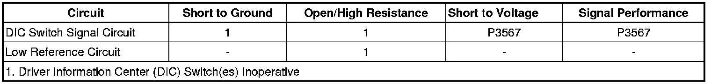

B3567
DTC B3567
Diagnostic Instructions
* Perform the Diagnostic System Check - Vehicle (Initial Inspection and Diagnostic Overview) prior to using this diagnostic procedure.
* Review Strategy Based Diagnosis (Initial Inspection and Diagnostic Overview) for an overview of the diagnostic approach.
* Diagnostic Procedure Instructions (Initial Inspection and Diagnostic Overview) provides an overview of each diagnostic category.
DTC Descriptors
DTC B3567 01
- Driver Information Center Select Switch Circuit Short to Battery
DTC B3567 59
- Driver Information Center Select Switch Circuit/Component Protection Time-Out
Diagnostic Fault Information

Circuit/System Description
The driver information center (DIC) switch is a multiplexed switch. Battery power is provided to the DIC switch via the instrument panel cluster (IPC). The DIC switch signal circuit is pulled up to battery voltage in the IPC. The IPC also provides the DIC switch with a low reference. The switch input to the IPC is pulled low when a switch is activated. The DIC switch is a momentary contact switch that connects a series of resistors in a resistor ladder format. The IPC monitors the DIC switch signal circuit to determine the DIC switch inputs. Each switch state - Set/Reset, Trip/Fuel, Vehicle Information, Personalization, INFO UP, INFO DOWN - corresponds to a certain resistance value. The IPC determines the switch pressed by the voltage drop across the resistors. A stuck switch or a short to battery sets a DTC.
The trip/fuel switch is monitored on a separate circuit provided by the IPC. The trip/fuel switch signal circuit is monitored for a stuck switch but not a short to battery.
Conditions for Running the DTC
The ignition is in ACCESSORY or RUN.
Conditions for Setting the DTC
* The IPC detects that the DIC switch is stuck.
* The IPC detects that the DIC switch signal circuit is shorted to battery.
Action Taken When the DTC Sets
The IPC ignores the DIC switch inputs.
Conditions for Clearing the DTC
* The DTC becomes history when the conditions for setting the DTC are no longer present.
* The history DTC clears after 40 malfunction-free warm-up cycles.
* The IPC receives a clear code command from the scan tool.
Diagnostic Aids
* When the Trip/Fuel switch is stuck, all other DIC switches functions correctly. When any of the DIC switches are stuck, only the Trip/Fuel switch functions correctly.
* Only the DIC switch signal circuit can be diagnosed as shorted to battery.
Reference Information
Schematic Reference
Instrument Cluster Schematics (Instrument Cluster Schematics)
Connector End View Reference
Component Connector End Views (Connector Views)
Description and Operation
Driver Information Center (DIC) Description and Operation (Description and Operation)
Electrical Information Reference
* Circuit Testing (Component Tests and General Diagnostics)
* Connector Repairs (Component Tests and General Diagnostics)
* Testing for Intermittent Conditions and Poor Connections (Component Tests and General Diagnostics)
* Wiring Repairs (Component Tests and General Diagnostics)
Scan Tool Reference
Control Module References (Programming and Relearning)
Circuit/System Testing
1. Ignition OFF, disconnect the harness connector at the driver information center (DIC) switch.
2. Verify a test lamp does not illuminate when connected between the DIC switch signal circuit terminal 1 and ground.
• If the test lamp illuminates, check the DIC switch signal circuits for a short to voltage. If the circuit tests normal, replace the IPC.
3. If all circuits test normal, test or replace the DIC switch.
Repair Instructions
Perform the Diagnostic Repair Verification (Verification Tests) after completing the diagnostic procedure.
* Control Module References (Programming and Relearning) for the IPC replacement, setup and programming.
* Driver Information Display Switch Replacement (Service and Repair)